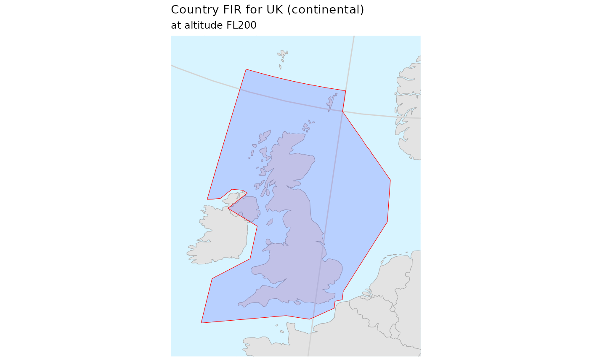
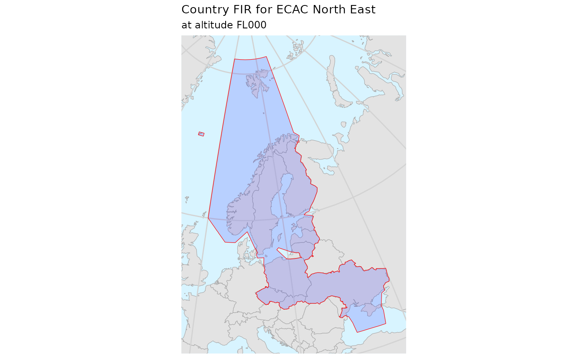

library(pruatlas)
library(dplyr)
#>
#> Attaching package: 'dplyr'
#> The following objects are masked from 'package:stats':
#>
#> filter, lag
#> The following objects are masked from 'package:base':
#>
#> intersect, setdiff, setequal, union
library(sf)
#> Linking to GEOS 3.8.1, GDAL 3.1.4, PROJ 6.3.1
library(ggplot2)
library(stringr)
library(readr)
library(purrr)Single Country FIR
Let’s plot Italian FIR at FL300
plot_country_fir("LI", "Italy", fl = 300)
#> although coordinates are longitude/latitude, st_union assumes that they are planar
For UK, things are more complicated because it has also an Oceanic bit of volume
plot_country_fir("EG", "UK (oceanic)", fl = 200)
#> although coordinates are longitude/latitude, st_union assumes that they are planarSo to plot the continental part only we need to split things:
uk_continental <- firs_nm_406 %>%
dplyr::filter(icao == "EG", min_fl <= 0, 0 <= max_fl) %>%
dplyr::filter(!(id %in% c("EGGXFIR", "EGGX")))
plot_country_fir(
"EG",
"UK (continental)",
firs = uk_continental,
fl = 200)
#> although coordinates are longitude/latitude, st_union assumes that they are planar
EUROCONTROL
Merged Member States FIRs
For plotting EUROCONTROL Member States’ FIR area we can select and merge the various airspaces:
plot_country_fir(icao_id = "E.|L.|UD|UG|GM|UK|GC",
"EUROCONTROL",
buffer = 350,
fl = 200)
#> although coordinates are longitude/latitude, st_union assumes that they are planar
All Member States FIRs
ms_codes <- member_states %>%
# filter out Germany (military, no specific FIR),
# Luxembourg (managed by Belgium) and Monaco (managed by France)
filter(!icao %in% c("ET", "EL", "LN")) %>%
pull(icao) %>%
sort() %>%
unique()
ms_firs <- ms_codes %>%
purrr::map_dfr(~ suppressMessages(
country_fir(pruatlas::firs_nm_406, icao_id = .x))) %>%
mutate(id = str_sub(id, 1, 2)) %>%
left_join(member_states, by = c("id" = "icao")) %>%
mutate(
name = case_when(
id == "EB" ~ "Belgium and Luxemburg",
id == "LF" ~ "France and Monaco",
id == "EG" ~ "United Kingdom",
TRUE ~ name),
icao = id,
min_fl = 200,
max_fl = 200)
plot_country_fir(firs = ms_firs,
icao_id = ms_codes,
fl = 200,
name = "EUROCONTROL",
merge = FALSE)
#> Warning in stri_detect_regex(string, pattern, negate = negate, opts_regex =
#> opts(pattern)): longer object length is not a multiple of shorter object length
CRCO Charging Zones
You can get the CRCO charging zones boundaries from EUROCONTROL web site. This package stores a real file as an example.
bo <- system.file("extdata", "sbm_bz_20200527.txt", package = "pruatlas")
crco <- readr::read_lines(bo) %>%
parse_airspace_crco() %>%
mutate(icao = unit)
codes <- crco %>% pull(icao) %>% unique()
# country_fir(firs = crco,
# icao_id = "E.|L.|UD|UG|GM|UK|GC",
# fl = 200, merge = FALSE)
#
# ggplot(crco) + geom_sf()
plot_country_fir(firs = crco,
fl = 200,
icao_id = codes,
name = "CRCO charging zones",
merge = FALSE)STATFOR Areas
ECAC North West
ecac_nw <- ecac_northwest() %>%
sf::st_as_sf() %>%
sf::st_union() %>%
sf::st_sf(geometry = .,
id = "ECAC_NW",
icao = "ECAC_NW",
name = "ECAC North West") %>%
mutate(min_fl = 0, max_fl = 999)
#> although coordinates are longitude/latitude, st_union assumes that they are planar
plot_country_fir(icao_id = "ECAC_NW", name = "ECAC North West", firs = ecac_nw)
#> although coordinates are longitude/latitude, st_union assumes that they are planar
ECAC Oceanic
ecac_oc <- ecac_oceanic() %>%
sf::st_as_sf() %>%
sf::st_union() %>%
sf::st_sf(geometry = .,
id = "ECAC_OC",
name = "ECAC Oceanic",
icao = "ECAC_OC"
) %>%
mutate(min_fl = 0, max_fl = 999)
#> although coordinates are longitude/latitude, st_union assumes that they are planar
plot_country_fir(icao_id = "ECAC_OC", name = "ECAC Oceanic", firs = ecac_oc)
#> although coordinates are longitude/latitude, st_union assumes that they are planar
ECAC South West
ecac_sw <- ecac_southeast() %>%
sf::st_as_sf() %>%
sf::st_union() %>%
sf::st_sf(geometry = .,
id = "ECAC_SW",
name = "ECAC South West",
icao = "ECAC_SW"
) %>%
mutate(min_fl = 0, max_fl = 999)
#> although coordinates are longitude/latitude, st_union assumes that they are planar
plot_country_fir(icao_id = "ECAC_SW", name = "ECAC South West", firs = ecac_sw)
#> although coordinates are longitude/latitude, st_union assumes that they are planar
ECAC North East
ecac_ne <- ecac_northeast() %>%
sf::st_as_sf() %>%
sf::st_union() %>%
sf::st_sf(geometry = .,
id = "ECAC_NE",
name = "ECAC North East",
icao = "ECAC_NE"
) %>%
mutate(min_fl = 0, max_fl = 999)
#> although coordinates are longitude/latitude, st_union assumes that they are planar
plot_country_fir(icao_id = "ECAC_NE",
name = "ECAC North East",
firs = ecac_ne)
#> although coordinates are longitude/latitude, st_union assumes that they are planar
ECAC South East
ecac_se <- ecac_southeast() %>%
sf::st_as_sf() %>%
sf::st_union() %>%
sf::st_sf(geometry = .,
id = "ECAC_SE",
name = "ECAC South East",
icao = "ECAC_SE"
) %>%
mutate(min_fl = 0, max_fl = 999)
#> although coordinates are longitude/latitude, st_union assumes that they are planar
plot_country_fir(icao_id = "ECAC_SE", name = "ECAC South East", firs = ecac_se)
#> although coordinates are longitude/latitude, st_union assumes that they are planar